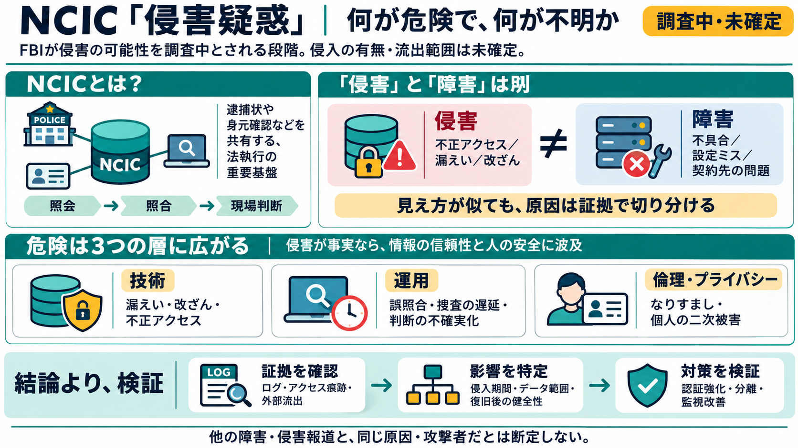

The FBI was hacked again, this time the breach targeted its crime database | CNN Politics
The FBI is investigating an apparent breach of its nationwide criminal information database that serves as a lifeline be…

The FBI is investigating an apparent breach of its nationwide criminal information database that serves as a lifeline be…
The hacking group called ShinyHunters previously told TechCrunch that they “have data on mostly all of FBI,” and a “subs…
"MDM with centralized administration capable of at least: i. Remote locking of device ii. Remote wiping of device …
# 2026 , the Federal Bureau of Investigation (FBI), and the U.K.’s National Cyber Security Centre (NCSC) are releasing …
# NCIC ID: qWgeBrtIcQbt Website: www.ncicit.com LinkedIn: www.linkedin.com/company/ncic · 544 followers Industry: Teleco…